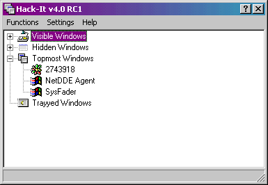

Many windows are given the distinction of being "topmost", i.e. they always float on top of all non-topmost windows. While not being an exclusive class of windows, it is useful to have this list in the Window List, to show which windows have this property. Windows in the Topmost Windows section will undoubtedly show up in either the Hidden or the Visible Windows sections.

Hack-It can list top-level topmost windows, or top-level and child topmost windows. Child topmost windows are only topmost relative to their siblings.
The topmost status of a floating child window in relation to top-level windows depends on the topmost status of its parent, i.e. the topmost status of the parent affects how the children are displayed in relation to other windows with the same parent as theirs.